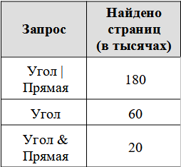
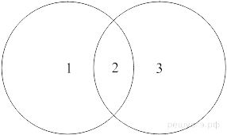
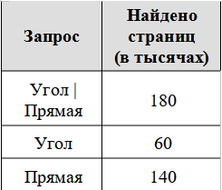
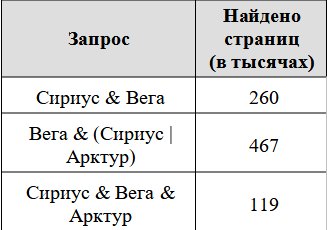
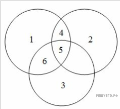
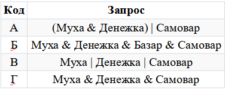
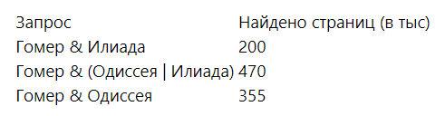

Задание 8. Понимать принципы поиска информации в Интернете
1. В языке запросов поискового сервера для обозначения логической операции «ИЛИ» используется символ «|», а для обозначения логической операции «И» — символ «&».
В таблице приведены запросы и количество найденных по ним страниц некоторого сегмента сети Интернет.
Какое количество страниц (в тысячах) будет найдено по запросу "Прямая"? Считается, что все запросы выполнялись практически одновременно, так что набор страниц, содержащих все искомые слова, не изменялся за время выполнения запросов.Решение.
Представим таблицу в виде кругов Эйлера. Пусть Угол — круг 1, Прямая — круг 3. Тогда задача — найти количество элементов N в областях 2 и 3: N2 + N3. По таблице известно:
N1 + N2 + N3 = 180 (1),
N1 + N2 = 60 (2),
N2 = 20.
Подставим второе уравнение в первое и найдём N3: N3 = 180 − 60 = 120. Таким образом, по запросу Прямая будет найдено N2 + N3 = 20 + 120 = 140 тысяч страниц.
Ответ: 140.
2. В языке запросов поискового сервера для обозначения логической операции «ИЛИ» используется символ «|», а для обозначения логической операции «И» — символ «&».
В таблице приведены запросы и количество найденных по ним страниц некоторого сегмента сети Интернет.
Какое количество страниц (в тысячах) будет найдено по запросу "Угол & Прямая"? Считается, что все запросы выполнялись практически одновременно, так что набор страниц, содержащих все искомые слова, не изменялся за время выполнения запросов.Решение.
Представим таблицу в виде кругов Эйлера. Пусть Угол — круг 1, Прямая — круг 3. Тогда задача — найти количество элементов N в области 2: N2. По таблице известно:N1 + N2 + N3 = 180 (1),
N1 + N2 = 60 (2),
N2 + N3 = 140 (3).
Подставим второе уравнение в первое и найдём N3: N3 = 180 − 60 = 120. Таким образом, по запросу Угол & Прямая будет найдено N2 = 140 − 120 = 20 тысяч страниц.
Ответ: 20.
3. В языке запросов поискового сервера для обозначения логической операции «ИЛИ» используется символ «|», а для логической операции «И» — символ «&».
В таблице приведены запросы и количество найденных по ним страниц некоторого сегмента сети Интернет.
Какое количество страниц (в тысячах) будет найдено по запросу "Вега & Арктур"?Считается, что все запросы выполнялись практически одновременно, так что набор страниц, содержащих все искомые слова, не изменялся за время выполнения запросов.
Решение.

Построим диаграмму Венна для данной задачи.Количество запросов в данной области будем обозначать Ni. Наша цель — найти N5 + N6. При этом круг 1 соответствует Веге, круг 2 — Сириусу, круг 3 — Арктуру.
Из таблицы находим, что:
N5 + N4 = 260
N4 + N5 + N6 = 467
N5 = 119
Тогда находим:
N4 = 141
N6 = 207
N5 + N6 = 119 + 207 = 326
Ответ: 326.
4. В таблице приведены запросы к поисковому серверу. Для каждого запроса указан его код — соответствующая буква от А до Г.
Расположите коды запросов слева направо в порядке убывания количества страниц, которые нашёл поисковый сервер по каждому запросу. По всем запросам было найдено разное количество страниц. Для обозначения логической операции «ИЛИ» в запросе используется символ «|», а для логической операции «И» — «&»:
Решение.
Поскольку чем больше в запросе «ИЛИ», тем больше результатов, то сначала поставим В (три ИЛИ).Раскроем скобки для строки А:
(Муха & Денежка) | Самовар = (Муха | Самовар) & (Денежка | Самовар)
Таким образом, имеем две операции «ИЛИ» и только одну «И». Значит, следующий код А.Поскольку чем больше в запросе «И», тем меньше результатов, то далее поставим Г (три И), а затем Б (четыре И).
Ответ: ВАГБ.
5. В языке запросов поискового сервера для обозначения логической операции «ИЛИ» используется символ «|», а для обозначения логической операции «И» – символ «&».
В таблице приведены запросы и количество найденных по ним страниц некоторого сегмента сети Интернет.
Решение.

Г&(О|И)-Г&И=470-200=270
Г&О-270=355-270=85
Ответ: 85.